Brain network AI
Graph neural networks and graph autoencoders that learn from resting-state functional connectivity to classify psychiatric disorders and reveal explainable biomarkers.
The AI Convergence Lab at Kunsan National University builds intelligent technology that understands and supports human health. We combine machine learning, computer vision and medical imaging with wearable sensing, Android and Galaxy Watch development, and collaborative robotics, taking ideas from data and algorithms to working systems that are tested with real people.
The AI Convergence Lab (AI융합실험실) is part of the Department of AI Convergence at Kunsan National University and is led by Professor Han-Gue Jo. The lab builds on more than a decade of clinical and cognitive neuroscience research in Germany and applies it with modern artificial intelligence.
Our work runs from the brain to the bedside to the workplace. We train graph neural networks on fMRI connectivity to find biomarkers of depression, schizophrenia and autism. We apply computer vision and deep learning to medical images. We build Android and Galaxy Watch apps that measure heart-rate variability and stress in real time, and we connect those signals to collaborative robots that adapt to the people beside them.
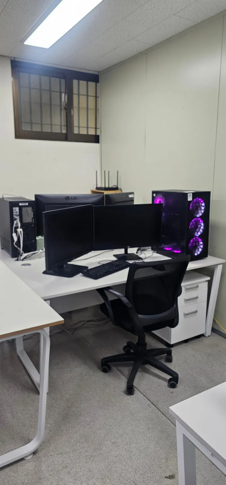
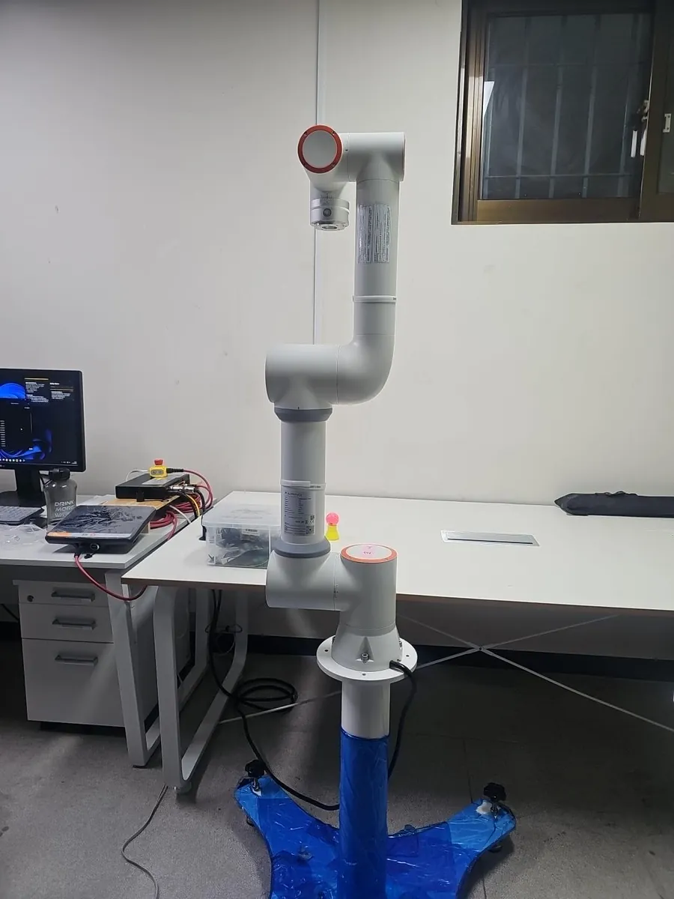
Six connected directions, from brain imaging to the factory floor.
Graph neural networks and graph autoencoders that learn from resting-state functional connectivity to classify psychiatric disorders and reveal explainable biomarkers.
Android and Galaxy Watch apps that stream beat-to-beat intervals, heart-rate variability, skin conductance and blood oxygen for research-grade health monitoring.
Collaborative robots that adapt their speed to an operator's physiological stress, making shared work safer and more comfortable.
Event-related potentials and brain oscillations in emotion, attention, pain, voluntary action and meditation, including simultaneous EEG-fMRI.
Evaluating large language models on clinical and counselling tasks, and measuring where benchmark scores fall short of real-world use.
Computer vision, medical imaging and virtual reality for assessment, training and therapy, linked to the lab's physiological sensing.
Built and tested in our lab, from the sensor on the wrist to the robot on the bench.
FAIRINO FR5 · CLOSED-LOOP STRESS-TO-SPEED PIPELINE
A Fairino FR5 cobot hands parts to a worker in a repeating pick-and-place task. A Galaxy Watch tracks the worker's heart-rate variability and skin conductance, and the robot slows down when stress rises.
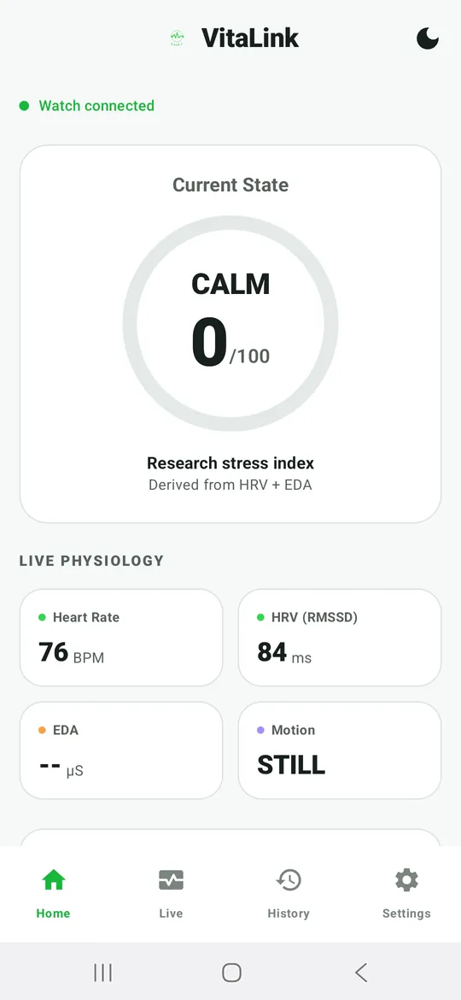
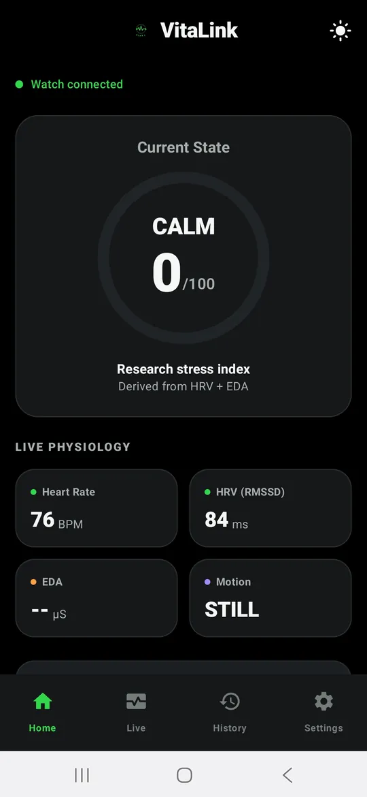
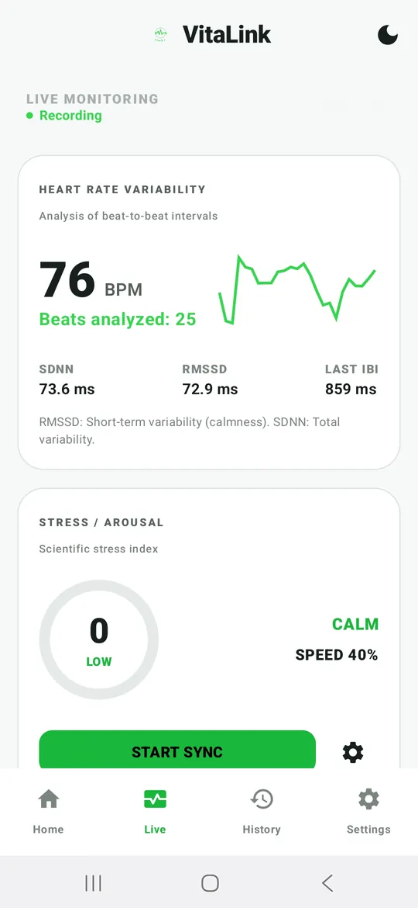
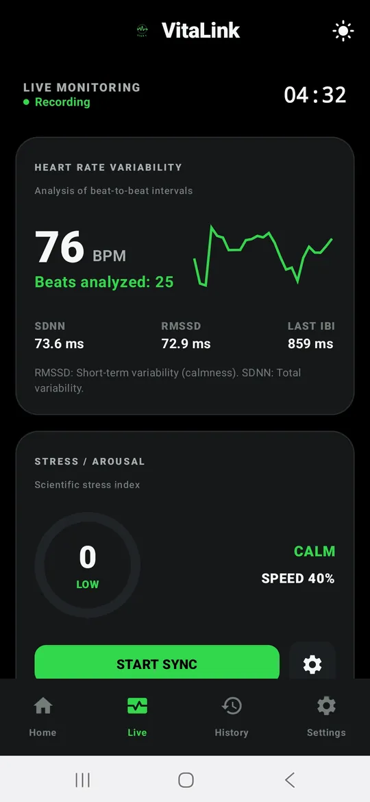
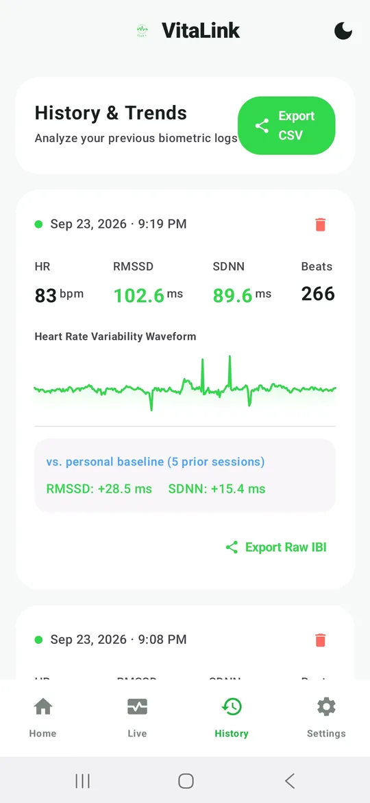
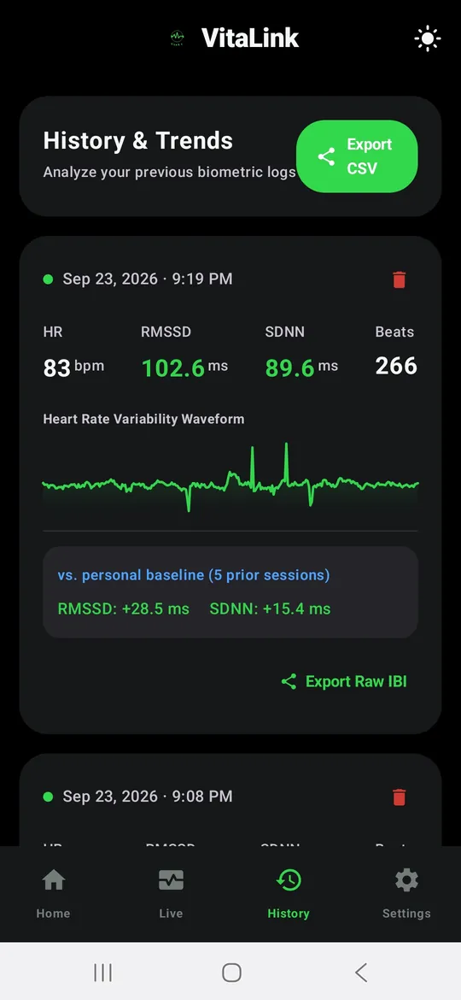
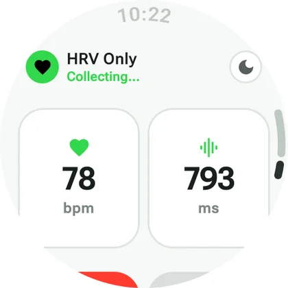
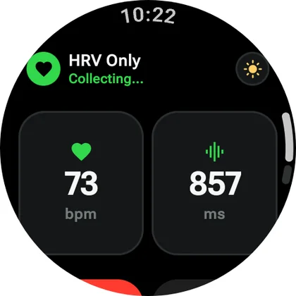
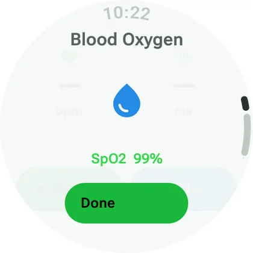
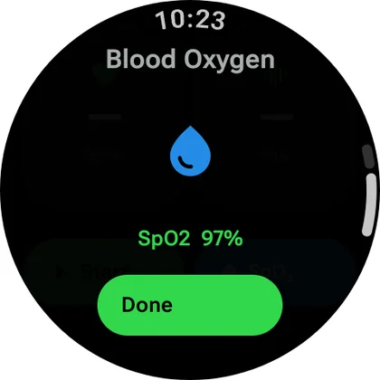
REAL SCREENS FROM THE PHONE AND GALAXY WATCH APPS · SWITCH THE THEME TO SEE BOTH MODES
Our wearable research platform: a Galaxy Watch app paired with an Android phone app. It records raw beat-to-beat data through the Samsung Health Sensor SDK and turns it into live, exportable HRV and stress measures.
GNN · RESTING-STATE FUNCTIONAL CONNECTIVITY
Brain regions become nodes and their functional connections become edges. Our models learn from these graphs to tell patients from healthy controls, then show which connections drove each decision.
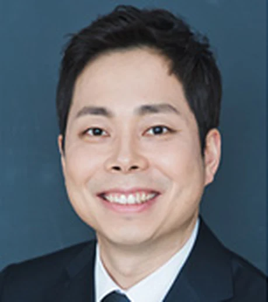
Professor, Department of AI Convergence · College of Computer Software, Kunsan National University
Professor Jo's research connects human neuroscience with artificial intelligence. His fields are IT convergence technology, brain cognitive science and AI, and medical informatics. He studies the brain and body with EEG, fMRI and wearable sensors, and develops AI methods for mental and physical healthcare.
He earned his PhD in brain cognitive science at European University Viadrina in Germany. He then worked as a researcher in the Department of Psychiatry, Psychotherapy and Psychosomatics at University Hospital RWTH Aachen on schizophrenia, depression, emotion and chronic pain. His research has been funded by the National Research Foundation of Korea (NRF), the German Research Foundation (DFG), RWTH Aachen University and the Bial Foundation.
| Metric | All | Since 2021 |
|---|---|---|
| Citations | 1,235 | 699 |
| h-index | 16 | 15 |
| i10-index | 24 | 22 |
An international group of graduate researchers working across AI and digital health.
PhD students
Artificial intelligence, digital health
Artificial intelligence, digital health
Master's students
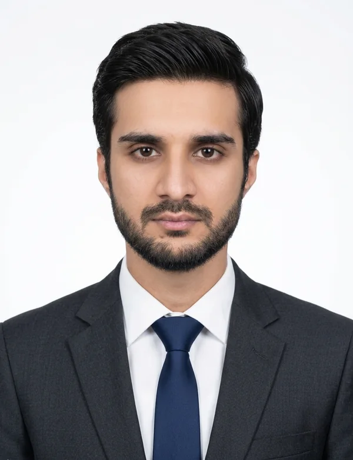
Wearable HRV sensing (VitaLink), stress-aware human-robot collaboration, computer vision and LLMs in healthcare
Artificial intelligence, digital health
Artificial intelligence, digital health
Artificial intelligence, digital health, graph neural networks for brain connectivity
Artificial intelligence, digital health
Artificial intelligence, digital health
Virtual reality, artificial intelligence, digital health
Artificial intelligence, digital health
Work by Professor Jo and lab members. Bold marks lab authors.
J.-W. Lee, H. Shayan, H.-G. Jo
H.-G. Jo, M. Votinov, P. Hüpen, …, U. Habel
N. Shin, H.-G. Jo
Y.-E. Kim, H. B. Bae, H.-G. Jo
J.-W. Lee, Y.-E. Kim, M. Votinov, …, H.-G. Jo
L. Herzberg, J. Schräder, H.-G. Jo, …, L. Wagels
P. Hüpen, B. Schulte Holthausen, C. Regenbogen, …, U. Habel
S. Scheliga, H.-G. Jo, M. F. Dohrn, …, U. Habel
S. Venkatapathy, T. Srinivasan, O.-S. Lee, …, I. Ra
S. Venkatapathy, M. Votinov, L. Wagels, …, H.-G. Jo
H.-G. Jo, J. R. Naranjo, T. Hinterberger, U. Winter, S. Schmidt
H.-G. Jo, P. Malinowski, S. Schmidt
H.-G. Jo, S. Schmidt, E. Inacker, M. Markowiak, T. Hinterberger
H.-G. Jo, T. Hinterberger, M. Wittmann, S. Schmidt
H.-G. Jo, M. Wittmann, T. Hinterberger, S. Schmidt
H.-G. Jo, T. Hinterberger, M. Wittmann, T. L. Borghardt, S. Schmidt
A single home for our research, projects, team and publications, with recruiting information for future students.
Our Galaxy Watch and Android platform now records complete study sessions: beat-to-beat heart data, HRV, skin conductance and blood oxygen, each compared with the participant's own baseline. It supplies the live stress signal for our robot study.
Machine-learning studies of cortical signatures in schizophrenia (Schizophrenia Research) and brain networks in autism (Psychiatry Research: Neuroimaging).
Our smartwatch-driven FR5 speed adaptation work is prepared for the Korean Institute of Smart Media fall conference.
We are recruiting motivated Master's and PhD students for research-focused graduate study in artificial intelligence and digital health. You will work on real research projects: machine learning on brain imaging, health apps for Android and Galaxy Watch, computer vision and medical imaging, and robots that adapt to the people around them. Applicants from Korea and from around the world are welcome.
How to apply: email your CV, academic transcripts and a one-page statement of your research interests to hgjo@kunsan.ac.kr. Please mention which of our research areas interests you most.
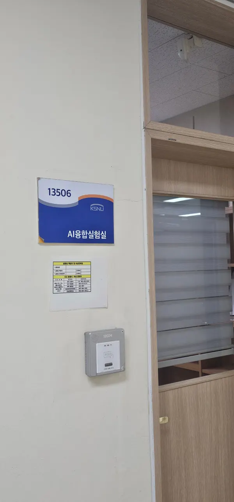